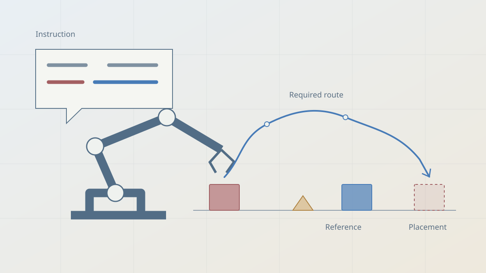
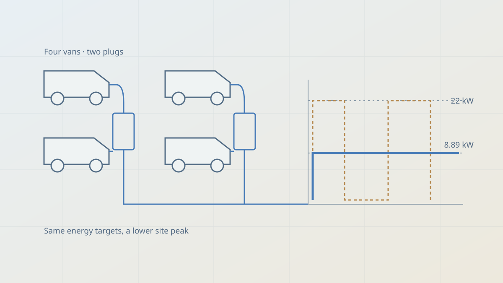

Open research
Code
From research code to autonomous agents.
These projects grew out of work on electrode production, electrochemical measurements and continual learning. I keep the models alongside data-loading routines, plots and checks so that a reported result can be traced back to its inputs.
The forgetting code examines how new updates affect earlier tasks. The thermal model connects calendering and electrode structure to heat transport. HELAO connects pumps and a robot to electrochemical measurements. More recent projects take language instructions into a simulated robot cell, or fit vehicle charging into the power available at a depot.
Each repository has a different starting point: a notebook, a simulated scene, an instrument configuration or an editable application. The project notes below identify the inputs and checks worth inspecting first. For comparisons, the data split, task order and configuration belong with the final score. For a new material or machine, those assumptions need to be checked again.
Research software
 Task geometry · paper & code ↗
Task geometry · paper & code ↗
Diagnosing forgetting requires tracing how updates interfere with earlier tasks. My research code provides interference-attribution analysis and Colab pipelines for continual pretraining and LoRA fine-tuning, with the working notes and negative results that shaped the paper.
- Training setup
- Frozen-feature experiments, continual-pretraining and LoRA analysis notebooks.
- Check
- Task order, random seeds and old-task performance alongside new-task accuracy.
 Process → property · paper & code ↗
Process → property · paper & code ↗
Predicting electrode thermal conductivity requires accounting for structural changes during calendering. My notebooks calibrate and validate the closure against electrode data and compare it with ML, PINN, and multiphysics approaches.
- Inputs
- Electrode composition, porosity, gas conditions and measured calendering states.
- Check
- Calibration against the stated measurement target. Contact evolution and graphite reorientation can remain difficult to distinguish.
Manual electrochemical screening limits throughput and repeatability. I developed pump and robot control for a scanning droplet cell during my M.Sc. to automate measurement sequences.
- Hardware context
- Pump and robot adapters for an electrochemical scanning droplet cell.
- Check
- Instrument configuration and operating procedures before adapting the control code to another laboratory.
Game-playing agents need to infer unfamiliar rules from observations and feedback. My ARC-AGI-3 experiments combine a Python agent with per-game diagnostics and analysis notebooks to investigate where its decisions succeed or fail.
- Experiment loop
- Game observations, bounded actions and per-game diagnostics.
- Check
- Performance on each game and failure case; successful runs do not establish general game-playing ability.

Text to Trajectory
Stack: Python · MuJoCo · NumPy / SciPyNatural-language instructions can lose a spatial constraint on the way to a final pose. T2T connects grounding, route requirements and observed execution in a MuJoCo KUKA iiwa cell.
- Work with
- Task instructions, object references and a simulated robot cell.
- Inspect
- The task representation, the planned movement and the execution checks together.

ChargeWise
Stack: Python · OR-Tools · FastAPI · ReactA fleet can have enough installed charging power and still need a better schedule. ChargeWise meets departure-energy targets while checking plug occupancy, compatibility, vehicle limits and shared site power.
- Work with
- Editable vehicles, chargers, prices, tariffs and simulated outages.
- Inspect
- An OR-Tools schedule and independent allocation checks. The public demo uses synthetic data and a local-summary assistant.
Reproducing a result
1. Fix the case
Use the repository's documented example and dependencies. Record the data version, units, task order and configuration.
2. Run the checks
Inspect constraints, intermediate artifacts and validation output alongside the final score or prediction.
3. Change one assumption
Try a held-out case or a different operating condition, then check which conclusion still holds.
For a concrete collaboration, send a short description of your setup and the outcome you need to measure.